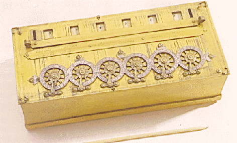
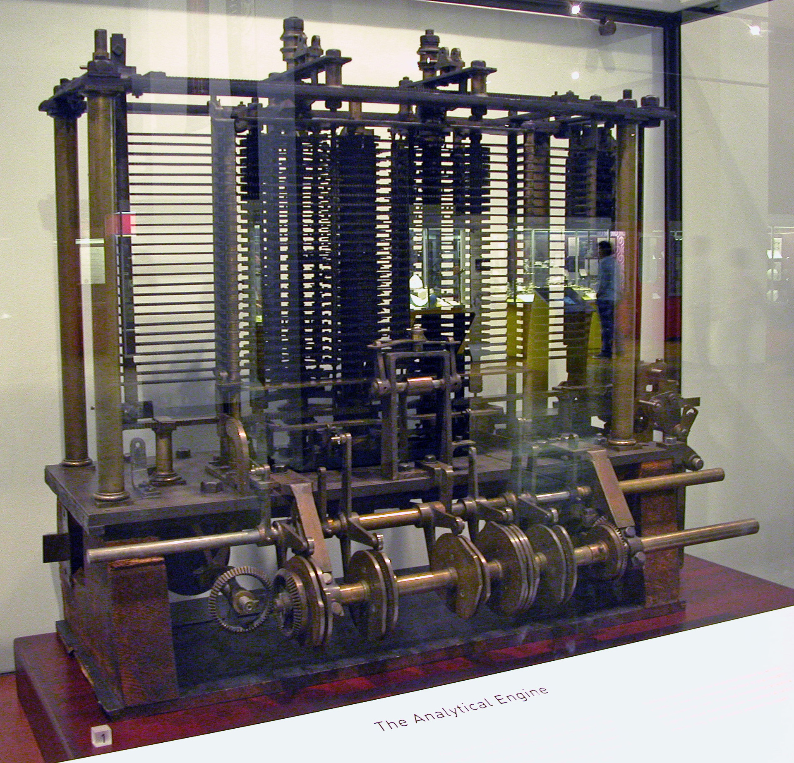
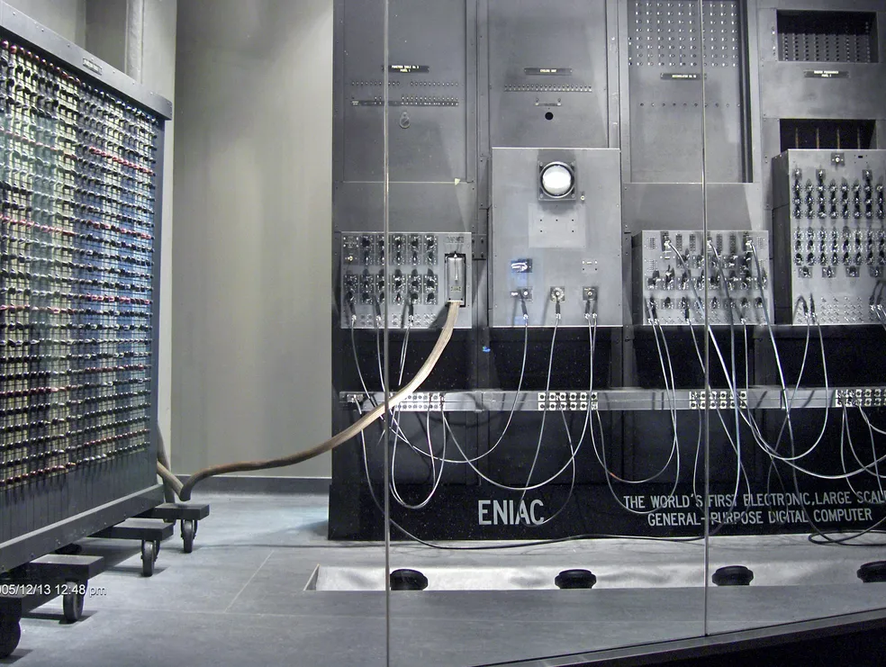

Informática Basica Para Iniciantes

O que é informática?
A informática básica ensina os conceitos fundamentais dos computadores, que facilitam a vida e a organização do trabalho. Seu entendimento é um pré-requisito comum para muitas vagas de emprego. Ter conhecimentos básicos de informática significa saber:
- Usar um computador;
- Acessar a internet;
- Usar navegadores;
- Criar e salvar arquivos;
- Organizar pastas;
- Ter noções sobre o sistema operacional do computador.
Os conceitos básicos mais importantes
Compreender a diferença entre os conceitos de software e hardware é fundamental. O termo hardware se refere a todos os itens físicos de um dispositivo, ou seja, tudo aquilo que pode ser tocado.
Teclado, mouse, monitor, placa de vídeo, memória e placa-mãe e as demais peças que compõem um computador, tablet ou smartphone são hardware.
Já o software diz respeito a aspectos que não são físicos, como o sistema operacional e os programas instalados na máquina.

Outros conceitos de informática básica são:
Sistema operacional: é o software mais importante, que faz o computador funcionar e permite que outros programas sejam instalados e rodem. Dentre os mais famosos para PC estão Windows, macOS e Linux. Já Android e iOS são os mais usados em smartphones;
CPU: sigla em inglês que significa Unidade Central de Processamento. É um dos componentes mais importantes da máquina, sendo a responsável por processar os dados e transformá-los em informação;
Disco rígido (HD): local onde são armazenados todos os dados do computador, como arquivos, programas, fotos, etc.;
Dispositivo de armazenamento de dados portáteis: aparelhos externos usado para armazenar arquivos de diferentes formatos fora do computador. Também permitem transferi-los para outros dispositivos. Entre eles, estão o pendrive e o HD externo;
Memória RAM: armazena informações que serão utilizadas pela CPU de forma temporária. Sua função é tornar processos mais velozes, ao guardar dados que foram usados recentemente e poderão ser necessários em breve;
Monitor: é a tela do computador;
Navegador: programa usado para acessar sites e navegar na internet. Chrome, Firefox, Safari e Opera estão entre os mais usados;
Nuvem: se refere a programas e serviços que funcionam baseados na internet. Ou seja, que não ocupam espaço em seu dispositivo, mas, sim, em servidores online. Dentre os serviços na nuvem mais populares estão os de armazenamento de fotos e outros arquivos, editores de texto, planilhas, apresentações, etc.;
Periféricos: são dispositivos auxiliares que adicionam funções extras ao dispositivo principal, como teclado, mouse, impressora, webcam, fone de ouvido, etc.
Placa-mãe: responsável por conectar todos os componentes entre si. Também é onde ficam instalados a CPU, o HD, a memória RAM, placa de vídeo, entre outros.
Para que serve a informática?
A informática coloca a tecnologia a serviço das pessoas ao garantir mais agilidade para lidar com a informação. Graças a ela, é possível criar, acessar, armazenar, processar e distribuir grandes volumes de dados rapidamente.
Para deixar mais claro, basta pensar nas urnas eletrônicas. Antes delas, o processo de contagem de votos no Brasil levava dias (ou até semanas, dependendo do caso). Atualmente, o resultado de uma eleição sai em poucas horas. Além disso, evita fraudes de apuração, erros de votação, entre outros problemas comuns no voto impresso.
Como uma ciência que lida com o processamento automático da informação, a informática abrange muitas áreas de atuação, como:
- Programação;
- Análise de sistemas;
- Desenvolvimento de hardware;
- Tecnologia da informação (TI);
- Manutenção de computadores;
- Inteligência artificial.
Como surgiu a informática?
A história da informática começa antes do surgimento do primeiro protótipo de um computador, na década de 1830. O princípio que levou ao desenvolvimento desse tipo de tecnologia é bem mais antigo. Surgiu com a necessidade de criar um dispositivo que pudesse fazer cálculos rapidamente.
1642: La Pascaline

Primeira calculadora mecânica do mundo, criada pelo matemático francês Blaise Pascal (1623-1662). Também conhecida como máquina aritmética, foi reconhecida como a primeira criação da informática.
Anos 1830: Máquina Analítica

Charles Babbage (1791-1871) projeta a Máquina Analítica, o que seria considerado o primeiro computador digital mecânico do mundo.
O aparelho funcionaria sem nenhuma intervenção humana, comandado apenas por programas. O projeto apresentava quatro características básicas, encontradas nos computadores até hoje.
O moinho era responsável por fazer as quatro operações aritméticas e memória por armazenar até mil números de 50 dígitos. Já os dados eram interpretados por um leitor de cartões perfurado, enquanto a impressora imprimia os resultados das operações executadas.
Conhecido como o pai da informática, Babbage faleceu sem concluir a construção do equipamento.1936: Máquina Universal de Turing

O matemático inglês Alan Turing (1912-1954) cria o modelo conhecido como Máquina Universal de Turing.
Apesar de hipotética, sua invenção serviu como base para a teoria da computação como é conhecida atualmente. Foram abordados os primeiros conceitos da ciência da computação e do uso de algoritmos.
1946: ENIAC: primeiro computador digital eletrônico do mundo

É concluído o primeiro computador digital eletrônico do mundo, o Electronic Numeral Integrator and Computer (Computador e Integrador Numérico Eletrônico, em português), o ENIAC.
Criado por John Mauchly (1907-1980) e John Eckert (1919-1995), foi encomendado pelo exército americano para processar dados sobre pesquisas táticas, durante a Segunda Guerra Mundial.
Funcionava com um sistema manual de perfuração de cartões e podia fazer até 5 mil adições, 357 multiplicações ou 38 divisões por segundo. Apesar de pesar cerca de 30 toneladas e ocupar um espaço de 167 m2, conseguia guardar apenas 20 palavras na memória.
O ENIAC foi desativado em outubro de 1955.